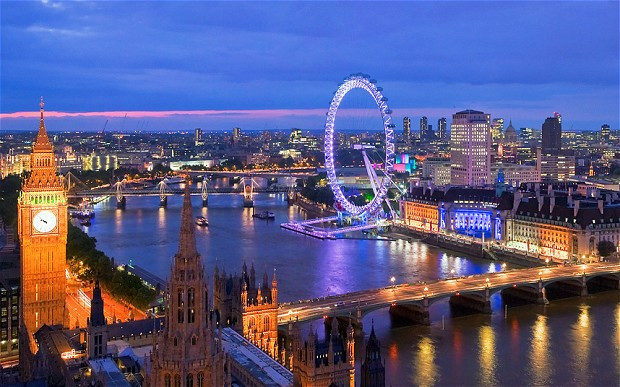
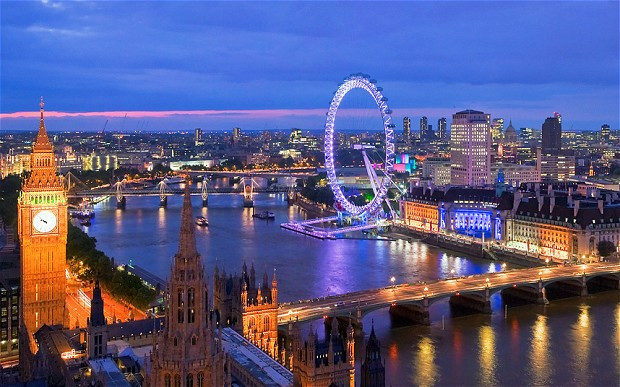

Big Ben
Big Ben este porecla marelui clopot al ceasului din turnul de nord al Palatului Westminster din Londra. Acest nume a fost utilizat atât în cazul clopotului, cât și al ceasului și chiar al turnului cu ceas.Big Ben este cel mai mare ceas cu clopot și patru fețe, și al treilea turn cu ceas ca înălțime din lume.Ceasul a fost pus în funcțiune în ziua de 31 mai 1859. Cea mai apropiată stație de metrou este Westminster de pe liniile Circle, District și Jubilee.
La Westminster s-a construit un turn cu ceas în 1288. Turnul actual a fost înălțat ca parte din proiectul lui Charles Barry de construcție a unui nou palat, după ce vechiul Palat Westminster a fost distrus de incendiu în noaptea de 16 octombrie 1834. Noul Parlament a fost construit în stil neogotic.Proiectul turnului cu ceas a fost ultimul realizat de Pugin înainte de a înnebuni și a muri, el însuși scriind, la momentul când Barry a venit la el să ia schițele: „Nu am muncit niciodată atât de mult în viața mea pentru dl. Barry căci mâine îi dau toate schițele pentru terminarea turnului său cu ceas și este frumos." Turnul are 96,3 m înălțime. Primii 61 m de la bază sunt construiți din căramidă învelită în calcar de Anston colorat cu nisip. Restul turnului este din fier. Turnul își are baza pe o placă de beton pătrată cu latura de 15 m și cu o grosime de 3 m, aflată la o adâncime de 4 m sub pământ. Cele patru fețe ale ceasului se află la o înălțime de 55 m. Volumul interior al turnului este de 4.650 m³.

Ceasul
Big Ben a fost cel mai mare ceas cu patru fețe din lume, fiind depășit între timp de Turnul cu ceas Allen-Bradley din Milwaukee, Wisconsin. Acest ceas însă nu are clopot, deci ceasul din Westminster încă este cel mai mare ceas cu patru fețe și clopot din lume. Față a Marelui Ceas de la Westminster. Orarul este de 2,7 metri lungime, iar minutarul are 4,3 metri lungime. Ceasul și fețele sale au fost proiectate de Augustus Pugin. Fețele sunt fixate într-un cadru de fier cu diametrul de 7 m, care susține 312 bucăți de sticlă de opal. Unele din bucățile de sticlă pot fi înlăturate pentru inspectarea brațelor.
Ceasul este celebru pentru acuratețea sa. Mecanismul său a fost proiectat de avocatul și ceasornicarul amator Edmund Beckett Denison, și de George Airy, Astronomul Regal. Lucrările de construcție au fost încredințate ceasornicarului Edward John Dent; după moartea sa în 1853, fiul său vitreg Frederick Dent i-a dus munca la bun sfârșit, în 1854.Întrucât turnul a fost terminat abia în 1859, Denison a avut timp să facă experimente: în loc să folosească un regulator și un remontoar, așa cum fusese inițial proiectat ceasul, Denison a inventat regulatorul gravitațional dublu cu trei picioare. Mecanismul ceasului dintr-o cameră de sub ea cântărește 5 tone.
What?
City of London este centrul istoric al orașului, și în același timp cel mai important cartier financiar al Regatului Unit.
About
Londra este un motor urias al economiei lumii. Londra a produs 365 miliarde $ în 2004 (17% din PIB-ul Regatului Unit), iar intreaga zona metropolitana londoneza a produs circa 30% din PIB-ul Regatului, adica mai mult decit PIB-ul Braziliei sau Rusiei.
More
Londra găzduiește cinci orchestre simfonice: London Symphony Orchestra, London Philharmonic Orchestra, Royal Philharmonic Orchestra, Philharmonia și BBC Symphony Orchestra. Principalele săli de concerte simfonice sînt Royal Albert Hall, Barbican Centre, Royal Festival Hall și Queen Elizabeth Hall. Royal Opera House din Covent Garden este casa Operei Regale și a Baletului Regal.
În Londra și-au început activitatea trupe rock celebre precum The Clash, Led Zeppelin, The Libertines, sau Pink Floyd. Săli de concerte rock celebre sunt Brixton Academy, Astoria sau Hammersmith Apollo.
Londra găzduiește carnavaluri și parade celebre, cum ar fi Carnavalul din Notting Hill, sau paradele de Sfântul Patrick (17 martie) sau Sfântul Gheorghe (23 aprilie).
În Londra se găsesc peste 30 de teatre, majoritatea concentrate în West End. Cele mai multe sunt comerciale și pun în scenă musical-uri și alte piese populare. Teatre "ne-comerciale" sunt National Theatre, The Globe (reconstrucție fidelă a vechiului teatru al lui Shakespeare), Old Vic și Young Vic.
Obiective turistice:
| Nr.crt. | Obiectiv |
|---|---|
| 1 | Big Ben |
| 2 | Palatul Buckingham |
| 3 | Roata din Londra |
| 4 | Tower Bridge |
| 5 | Turnul Londrei |
| 6 | Palatul Westminster |
| 7 | London Dungeon |
Personalități marcante din Londra:
-
Actori
- Kate Beckinsale
- Ben Chaplin
- Tom Felton
- Hugh Grant
- Jude Law
- Scriitori
- Michael Moorcock
- Ann Radcliffe
- Tom Sharpe
- David Thomson
- Elizabeth Bowen
- Muzicieni
- Adam Ant
- James Blake
- David Bowie
- Gary Crosby
- Ian Dury